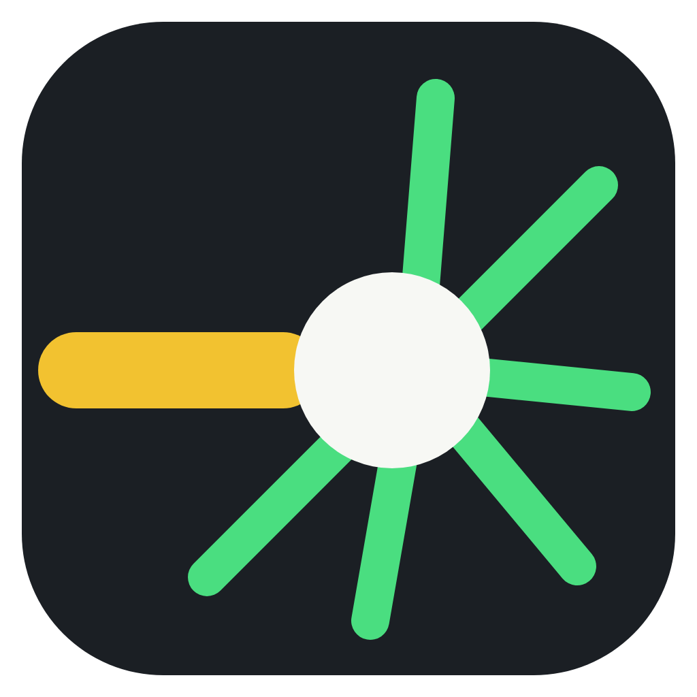

1 · Choose an instrument: the neutrons start at the target
Who sends us requests · click to meet them
2 · Your instrument

Each instrument is simulated with McStas from the official ESS model. Your files have the format of the real instrument and are reduced with the ESS software.